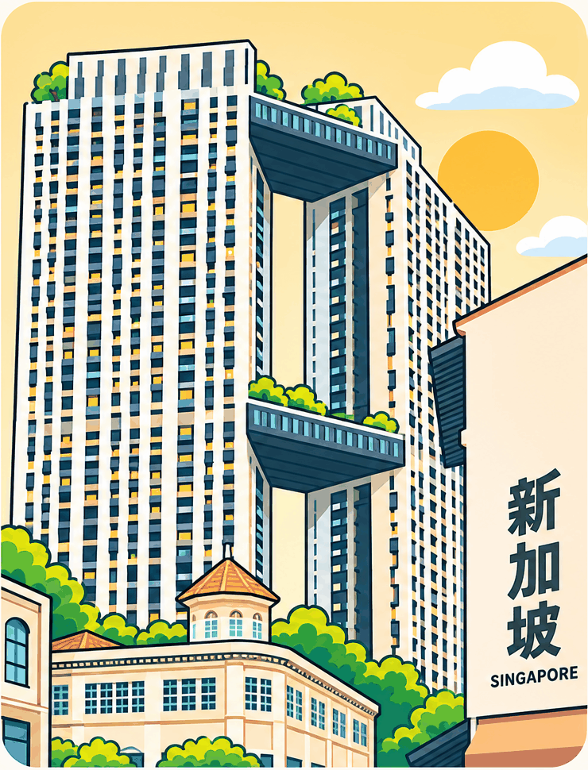

Singapore Playful Neo-Retro, original v2 plus Pinnacle floating-clouds artwork. Six interactive standalone HTML prototypes.

UI concept only. All money figures are illustrative, no backend integration or live financial advice.